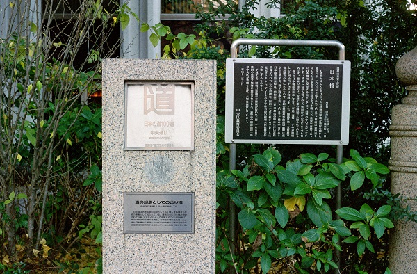

日本橋を出発して京都三条大橋まで約513Km 標高差約845m(箱根峠）。
歩き距離・時間はｽﾀｰﾄ駅から到着駅までです。（寄り道もあります）
| 年月日 | 出発駅・時間 | 到着駅・時間 | 歩き距離・時間 | 宿場 峠 | 写真ﾌﾞﾛｸﾞ | |
|---|---|---|---|---|---|---|
| 2015/1/24 | 東京駅_10:16 | 川崎駅_15:17 | 20.9Km：5時間1分 | 日本橋 | 日本橋その1_東海道_20150124 日本橋その2_東海道_20201122 | |
| 2015/1/24 | 品川宿 | 品川宿その1_20150124 品川宿その2_東海道_20201122 品川宿その3_東海道_20201122 | ||||
| 2015/1/24, 2020/11/22 | 川崎宿 | 川崎宿その1_20150124 川崎宿その2_東海道_20201122 | ||||
| 2015/1/24 | 神奈川宿 | 神奈川宿_20150124> | ||||
| 2015/1/25 | 川崎駅_10:33 | 東戸塚駅_15:58 | 25.0Km：5時間24分 | 保土ヶ谷宿 | 保土ヶ谷宿_20150125 | |
| 2015/1/25 | 戸塚宿 | 戸塚宿_20150125,29 | ||||
| 2015/1/29 | 東戸塚駅_10：20 | 茅ヶ崎駅_15:48 | 24.4Km：5時間28分 | 藤沢宿 | 藤沢宿_20150129 | |
| 2015/1/31 | 茅ヶ崎駅_9：59 | 国府津駅_15:23 | 22.6Km：5時間23分 | 平塚宿 | 平塚宿_20150131 | |
| 2015/1/31 | 大磯宿 | 大崎宿その1_20150131 大崎宿その2_20150131 | ||||
| 2015/2/3 | 国府津駅_10:52 | 箱根湯本駅_15:00 | 16.4Km：4時間8分 | 小田原宿 | 小田原宿その１_20150205 小田原宿その２_20150205 | |
| 2015/4/18 | 箱根湯本駅_9:20 | 箱根港バス停_13:48 | 14.5Km：4時間27分 | 箱根峠東坂・箱根関所・箱根宿 | 箱根湯元→箱根峠 2015/4 | |
| 2015/12/19 | 箱根港バス停_10:55 | 三島駅_15:45 | 18.5Km：4時間50分 | 箱根峠西坂・三島宿 | 箱根峠_西坂下り その１ 2015/12 箱根峠_西坂下り その2 2015/12 箱根峠_西坂下り その3 箱根峠_西坂下り その4 箱根峠_西坂下り その5 | |
| 2015/12/26 | 三島駅_11:19 | 原駅_16:33 | 20.2Km：5時間14分 | 沼津宿・ | 三島から富士まで その１ 三島から富士まで その2 三島から富士まで その3 三島から富士まで その4 | |
| 2015/12/27 | 原駅_8:00 | 富士駅_13:44 | 22.0Km：5時間43分 | 吉原宿 | 三島から富士まで その5 三島から富士まで その6 | |
| 2017/3/4 | 富士駅_10:01 | 由比駅_14:22 | 17.1Km：4時間21分 | 蒲原宿 | 富士駅から由比駅まで 2017/3 蒲原宿 2017/3 間宿 岩淵 2017/3 秋葉山 岩淵 2017/3 蒲原宿 2017/3 | |
| 2017/3/13 | 清水駅_10:02 | 静岡駅_14:36 | 17.7Km：4時間33分 | 由比宿 | 由比宿 2017/3 由比宿 蒲原宿 2017/3 由比宿 街並み 2017/3 | |
| 2017/3/13 | 興津宿 | 薩堆峠 興津宿 2017/3 薩堆峠 2017/3 清水 静岡 2017/3 興津坐漁荘_興津宿 2017/3 | ||||
| 2017/3/13 | 江尻宿 | 江尻宿 東海道 20170310 江尻宿 清水 2017/3 | ||||
| 2017/3/13 | 府中宿 | 駿府城 府中宿 2017/3 清水 草薙 2017/3 | ||||
| 2017/4/2 | 静岡駅_11:26 | 藤枝駅_15:53 | 17.2Km：4時間26分 | 丸子宿 | 丸子宿 2017/4 丸子宿 2017/4 丸子宿 2017/4 丸子下宿 安部川2017/4 | |
| 2017/4/2 | 宇津ノ谷峠 | 宇津ノ谷峠 2017/4 宇津ノ谷峠 2017/4 | ||||
| 2017/4/3 | 藤枝駅_8:06 | 六合駅_12:21 | 16.1Km：4時間15分 | 岡部宿 | 岡部宿1 2017/4 岡部宿2 2017/4 | |
| 2017/4/3 | 藤枝宿 | 藤枝宿1 2017/4 藤枝宿2 2017/4 | ||||
| 2017/4/23 | 六合駅_9:57 | 掛川駅_17:26 | 25.1Km：7時間28分 | 島田宿 | 島田宿 2017/4 島田宿 2017/4 島田宿 2017/4 島田宿 大井川 2017/4 | |
| 2017/4/23 | 金谷宿 | 大井川 金谷宿 2017/4 金谷宿 2017/4 菊川坂と金谷坂 2017/4 | ||||
| 2017/4/24 | 掛川駅_7:30 | 磐田駅_15:16 | 25.5Km：7時間46分 | 日坂宿 | 中山峠 2017/4 日阪宿 2017/4 日阪宿 2017/4 日坂宿 2017/4 | |
| 2017/4/24 | 掛川宿 | 掛川宿 2017/4 掛川宿 2017/4 掛川宿 2017/4 | ||||
| 2017/4/24 | 袋井宿 | 袋井宿 2017/4 袋井宿 2017/4 | ||||
| 2017/4/24 | 見付宿 | 木原 2017/4 見附宿 2017/4 見附宿 2017/4 見附宿 2017/4 | ||||
| 2017/4/25 | 磐田駅_7:29 | 天竜川駅_9:58 | 9.2Km：2時間29分 | 天竜川 | 中間点通過 天竜川 2017/4 天竜川 2017/4 | |
| 2018/3/11 | 天竜川駅_11:49 | 弁天島駅_17:24 | 23.9Km：5時間35分 | 浜松宿 | 浜松宿 2018/3/11 浜松宿と← →舞阪宿の間 篠原 2018/3/11 | |
| 2018/3/11 | 舞阪宿 | 舞坂宿 2018/3/11 | ||||
| 2018/3/12 | 弁天島駅_9:17 | 豊橋駅_16:54 | 28.9Km：7時間36分 | 新居宿 | 浜名湖を舟ではなく歩いて 東海道 2018/3 新居宿 東海道 2018/3 新居宿 2 東海道 2018/3 | |
| 2018/3/12 | 白須賀宿 | 白須賀宿1 2018/3/12 白須賀宿2 2018/3/12 | ||||
| 2018/3/12 | 二川宿 | 二川宿 2018/3/12 | ||||
| 2018/3/12 | 吉田宿 | 吉田宿1 2018/3/12 吉田宿2 2018/3/12 | ||||
| 2018/3/13 | 豊橋駅_7:05 | 御油駅_10:38 | 14.2Km：3時間32分 | 御油宿 | 御油宿1 2018/3/13 御油宿2 2018/3/13 | |
| 2018/11/21 | 御油駅_10:28 | 岡崎公園前駅_17:23 | 24.5Km：6時間54分 | 赤坂宿 | 御油宿→赤坂宿 2018/11/21 赤坂宿 2018/11/21 | |
| 2018/11/21 | 藤川宿 | 本宿（門前町）2018/11/21 藤川宿1 2018/11/21 藤川宿2 2018/11/21 | ||||
| 2018/11/22 | 岡崎公園前駅_08:31 | 鳴海駅_15:54 | 28.1Km：7時間23分 | 岡崎宿 | 岡崎宿 2018/11/21 岡崎宿 2018/11/22 岡崎宿 2018/11/22 | |
| 2018/11/22 | 知立（池鯉鮒） | 知立宿 2018/11/22 知立宿 2018/11/22 | ||||
| 2018/11/22 2018/11/23 | 鳴海駅_08:20 | 七里の渡し_10:59 | 9.9Km：2時間39分 | 鳴海宿 | 有松 鳴海宿 2018/11/22 鳴海宿 2018/11/22 鳴海宿 2018/11/23 | |
| 2018/11/23 | 宮宿 熱田神宮 | 熱田神宮 宮宿 東海道 2018/11/23 宮宿 東海道 2018/11/23 宮宿 東海道 2018/11/23 | ||||
| 2018/11/23 | 宮 七里の渡し | 七里の渡し 宮宿 東海道 2018/11/23 | ||||
| 2019/04/12 | 桑名駅_GPSﾛｶﾞｰ故障 | 四日市_GPSﾛｶﾞｰ故障 | 15.7Km：GPSﾛｶﾞｰ故障 | 七里の渡し | 七里の渡し 2019/04/12 | |
| 2019/04/12 | 桑名宿 | 桑名宿 2019/04/12 | ||||
| 2019/04/12 | 四日市 | 四日市宿1 2019/04/12 四日市宿2 2019/04/12 四日市宿3 2019/04/14 | ||||
| 2019/04/14 | 加佐登駅_GPSﾛｶﾞｰ故障 | 四日市_GPSﾛｶﾞｰ故障 | 18.1Km：GPSﾛｶﾞｰ故障 | 石薬師寺宿 | 石薬師寺宿その1 2019/04/14 石薬師寺宿その2 2019/04/14 石薬師寺宿その3 2019/04/14 | |
| 2019/04/14 | 庄野宿 | 庄野宿 2019/04/14 | ||||
| 2019/04/13 | 関駅_GPSﾛｶﾞｰ故障 | 加佐登駅_GPSﾛｶﾞｰ故障 | 23.1Km：GPSﾛｶﾞｰ故障 | 亀山宿 | 亀山宿その1 2019/04/13 亀山宿その2 2019/04/13 亀山宿その3 2019/04/13 | |
| 2019/04/13 | 関宿 | 関宿その1 2019/04/13 関宿その2 2019/04/13 関宿その3 2019/04/13 関宿その4 2019/04/13 | ||||
| 2019/04/13 | 坂下宿 | 坂下宿その1 2019/04/13 坂下宿その2 2019/04/13 | ||||
| 2019/04/13 | 鈴鹿峠 | 鈴鹿峠その1 2019/04/13 鈴鹿峠その2 2019/04/13 鈴鹿峠その3 2019/04/13 | ||||
日本橋です 道の駅１００選。
